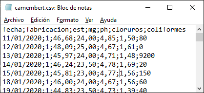
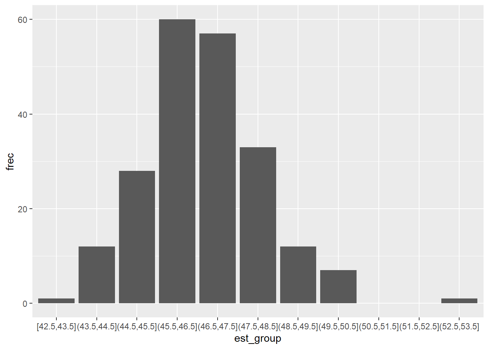
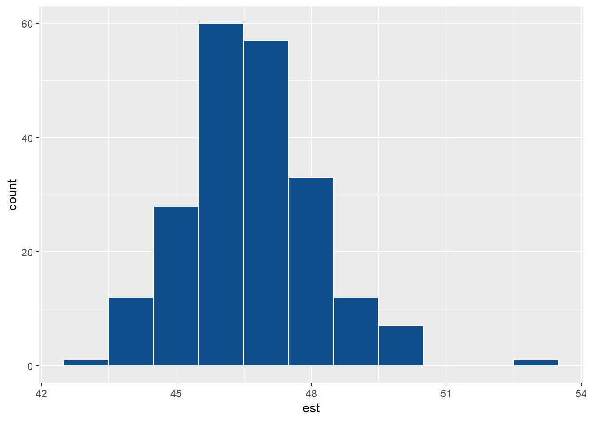
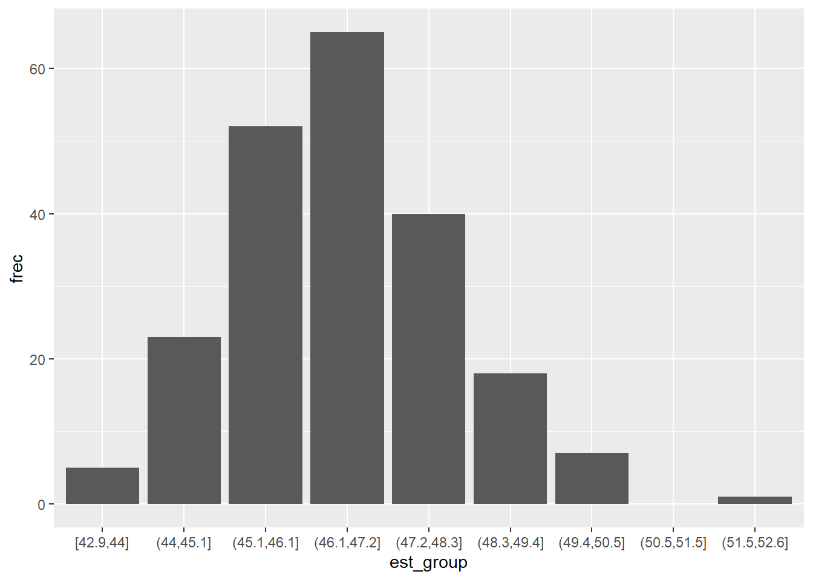
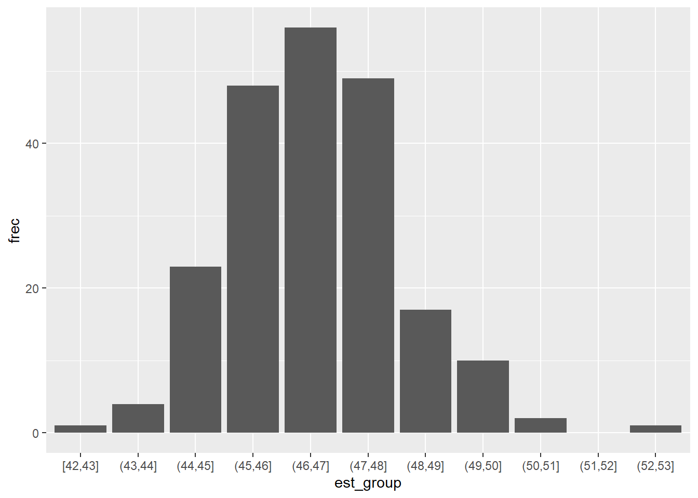

library(tidyverse)
df <- read_csv2("camembert.csv") Para hacer una tabla de frecuencias, el primer paso es cargar la librería tidyverse y leer los datos en \(R\), en este caso a partir de un archivo CSV.
Como el .CSV ha sido generado desde Excel en español, los separadores son puntos y comas, y el separador de los decimales será la coma, y tendrá este aspecto en un editor de texto básico:

Para leer este archivo, utilizaremos la función read_csv2()que se adapta a este formato usado en Europa (utiizamos la función de tidyversey no la función read.csv2()de \(R\) básico)
Vamos a utilizar los pipes de \(R\) para construir nuestra tabla paso a paso. En cada paso, iremos añadiendo instrucciones adicionales para llegar al bloque de código que buscamos.
El primer paso es seleccionar la variable de la que vamos a hacer la tabla, en este caso es \(est\), el \(extracto\ seco\ total\).
df |>
select(est)# A tibble: 211 × 1
est
<dbl>
1 46.7
2 48.1
3 46.0
4 46.2
5 45.8
6 46
7 44.8
8 45.8
9 47.1
10 45.6
# ℹ 201 more rowsA continuación, agrupamos los valores por intervalos. Para ello usamos la función cut_width() de la librería ggplot2, que nos permite cortar los valores en intervalos, definidos por el parámetro width=; en este caso, damos al intervalo una amplitud de \(1\).
df |>
select(est) |>
mutate(est_group = cut_width(est, width = 1)) # A tibble: 211 × 2
est est_group
<dbl> <fct>
1 46.7 (46.5,47.5]
2 48.1 (47.5,48.5]
3 46.0 (45.5,46.5]
4 46.2 (45.5,46.5]
5 45.8 (45.5,46.5]
6 46 (45.5,46.5]
7 44.8 (44.5,45.5]
8 45.8 (45.5,46.5]
9 47.1 (46.5,47.5]
10 45.6 (45.5,46.5]
# ℹ 201 more rowsLo que hemos hecho es designar el intervalo al que pertenecen todos los valores de \(est\), con la amplitud de intervalo que hemos definido mediante el parámetro elegido.
El paso siguiente es agrupar los intervalos, contando el número de veces que aparece cada uno.
df |>
select(est) |>
mutate(est_group = cut_width(est, width = 1)) |>
group_by(est_group)# A tibble: 211 × 2
# Groups: est_group [9]
est est_group
<dbl> <fct>
1 46.7 (46.5,47.5]
2 48.1 (47.5,48.5]
3 46.0 (45.5,46.5]
4 46.2 (45.5,46.5]
5 45.8 (45.5,46.5]
6 46 (45.5,46.5]
7 44.8 (44.5,45.5]
8 45.8 (45.5,46.5]
9 47.1 (46.5,47.5]
10 45.6 (45.5,46.5]
# ℹ 201 more rowsParece que no ha sucedido nada porque en tidyversenecesitamos indicar cómo vamos a utilizar la agrupación. En este caso, queremos contar el nímero de veces que aparece cada intervalo, lo que nos dará la frecuencia de valores que aparecen en ese intervalo. Para ello, usamos summarize(). Esta función sustituye el dataframe original por un nuevo dataframe con el resultado de la agrupación de est_group, creando además una nueva variable, que llamaremos \(frec\) y que cuenta el número de veces que aparece cada valor de intervalo mediante la función n()
df |>
select(est) |>
mutate(est_group = cut_width(est, width = 1)) |>
group_by(est_group) |>
summarize (frec = n())# A tibble: 9 × 2
est_group frec
<fct> <int>
1 [42.5,43.5] 1
2 (43.5,44.5] 12
3 (44.5,45.5] 28
4 (45.5,46.5] 60
5 (46.5,47.5] 57
6 (47.5,48.5] 33
7 (48.5,49.5] 12
8 (49.5,50.5] 7
9 (52.5,53.5] 1Ya tenemos nuestra tabla de frecuencias. Sin embargo, tenemos un inconveniente, y es que la agrupación se salta aquellos intervalos que tienen frecuencia \(cero\): no nos apararece el intervalo \((50.5,51.5]\) ni el \((51.5,52.5]\) porque no hay ningún valor en estos intervalos. Por defecto, al igual que pasa en Excel, los casos inexistentes (con una frecuencia de \(cero\)) no aparecen en la tabla de frecuencias. Pero, al contrario que en Excel, en \(R\) sí tenemos una forma de decir que queremos que aparezcan, y es rellenar los casos \(cero\) con el valor \(0\). Utilizamos para ello la función complete()
df |>
select(est) |>
mutate(est_group = cut_width(est, width = 1)) |>
group_by(est_group) |>
summarize (frec = n()) |>
complete(est_group, fill = list(frec = 0))# A tibble: 11 × 2
est_group frec
<fct> <int>
1 [42.5,43.5] 1
2 (43.5,44.5] 12
3 (44.5,45.5] 28
4 (45.5,46.5] 60
5 (46.5,47.5] 57
6 (47.5,48.5] 33
7 (48.5,49.5] 12
8 (49.5,50.5] 7
9 (50.5,51.5] 0
10 (51.5,52.5] 0
11 (52.5,53.5] 1Ahora sí está completa nuestra tabla de frecuencias.
Resumiendo los pasos que hemos dado,
- seleccionamos la variable de la que queremos hacer la tabla de frecuencias
- creamos una nueva variable con los intervalos que deseamos
- agrupamos los intervalos creando una nueva variable que recoge las frecuencias
- completamos los casos vacíos para que aparezcan con el valor \(cero\)
Si queremos utilizar la tabla de frecuencias, podemos guardarla en una variable.
tabla_frec <- df |>
select(est) |>
mutate(est_group = cut_width(est, width = 1)) |>
group_by(est_group) |>
summarize (frec = n()) |>
complete(est_group, fill = list(frec = 0))Verificamos nuestra tabla, imprimiendo la variable que hemos creado:
tabla_frec# A tibble: 11 × 2
est_group frec
<fct> <int>
1 [42.5,43.5] 1
2 (43.5,44.5] 12
3 (44.5,45.5] 28
4 (45.5,46.5] 60
5 (46.5,47.5] 57
6 (47.5,48.5] 33
7 (48.5,49.5] 12
8 (49.5,50.5] 7
9 (50.5,51.5] 0
10 (51.5,52.5] 0
11 (52.5,53.5] 1Con esta tabla de frecuencia podemos hacer un gráfico de barras
tabla_frec |>
ggplot(aes(x=est_group, y = frec)) +
geom_col()
que es equivalente a un histograma con la parametrización adecuada
df |>
ggplot(aes(x=est)) +
geom_histogram(colour="white", fill="dodgerblue4", binwidth = 1)
Otras alternativas
La elección de la función de corte nos permite agrupar los intervalos de forma ligeramente diferente. Si utiizamos como opción cut_interval() en vez de cut_width(), y utilizamos el parámetro n=, definiremos el número de intervalos y no la amplitud. Veamos el efecto en el diagrama de utilizar esta opción con n = 9:
df |>
select(est) |>
mutate(est_group = cut_interval(est, n = 9)) |>
group_by(est_group) |>
summarize (frec = n()) |>
complete(est_group, fill = list(frec = 0)) |>
ggplot(aes(x=est_group, y = frec)) +
geom_col()
La función cut_interval() también permite definir la amplitud del intervalo mediante el parámetro length=, de manera alternativa al número de clases que definimos con n=
df |>
select(est) |>
mutate(est_group = cut_interval(est, length = 1)) |>
group_by(est_group) |>
summarize (frec = n()) |>
complete(est_group, fill = list(frec = 0)) |>
ggplot(aes(x=est_group, y = frec)) +
geom_col()
Para probar
A partir del último bloque de código, encuentra la forma de obtener e imprimir la tabla de frecuencias que se obtiene con cut_interval()